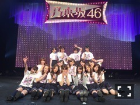
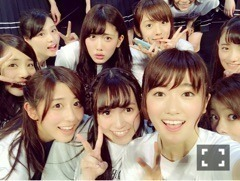
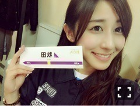

| 2016/05 01 Sun | アンダーライブ編(´ >∀<｀)ゝ |
ちはるーむへようこそ！
今回は、アンダーライブ全国ツアー東北シリーズについて♡
1週間東京を離れて、ライブをするのが初めてでした！
今回は新しい演出で、表現力を高め、乃木坂の曲の良さを更に感じていただこうという、ストーリー性のあるライブでした。
今までのアンダーライブの基軸だった勢い、気迫というものを捨てて挑むっていうのは正直不安もありました。
でも毎日毎日みんなで反省して、褒めあって、高めあって、同じものを創り上げていくって素晴らしいなって改めて感じました。
終わったら達成感が凄かった。
私達それぞれ、何か得られたと心の中で感じていました。
岩手、青森は2、3階が埋まらず悔しい思いをして、私達まだまだだなと感じたり。
でもそんな私たちを元気付けるかのようにファンの方達の一体感が物凄くて愛を感じたり。
正直盛り上がらないんじゃないかとメンバー思ってたけどそんなことなかった。
たくさん盛り上がってくれて、楽しんでくれて、客席が近い分余計に近くでそれを感じられた。
ぐあーーと書きましたが、何が言いたいかというと、つまり、東北最高だったという事です！
本当に楽しかった！！
本当に！！本当に！！
来れなかった方にも来ていただきたかった。
私たちの振り幅を見て欲しかった。
アンダーメンバー、まだまだやれるぞ。

私がライブで1番思い出に残ってるのは、
愛未と、ひなちまと3人で歌った「羽根の記憶」！
私は歌が大好きなので、こういう機会を与えていただけて凄く嬉しかった( ;o; )
自分だけの歌声が皆さんに直接届いて、歌声が響いて、とても気持ちよかった！
でもその反面、まだまだだなーって感じることも多々あって。
こんな悔しい思いをしないように、日々準備していくことも大切。
頑張らなきゃいけないことがたくさんあります。

そして東北では、毎日美味しいものが食べられました♡
福島 いかにんじん、焼きすき焼き
宮城 牛タン、笹かま、蔵王
岩手 海鮮炭火焼
青森 せんべい汁
秋田 りんごジュース、金萬
山形 さくらんぼ
その他にもたくさん食べたんだけど、
キリがないのでざっとこれだけ(｡･o･｡)ﾉ

こういうシールが配布されていて、このシール持ってみんなで写真撮るのも毎日恒例化されて楽しかったな♡
これは秋田バージョン！

アンダーライブ全国ツアー。
名古屋のらりん卒業ライブに続けて、東北シリーズ。
いいものが繋げられたんじゃないかな(﹡ˆ ˆ﹡)
来てくれた皆さん、
応援してくれていた皆さん、
本当にありがとうございました！！
皆さんがいたから頑張れたよ。
アンダーライブ編、完。
斎藤ちはる
コメント(211)
2016/05/01 10:24